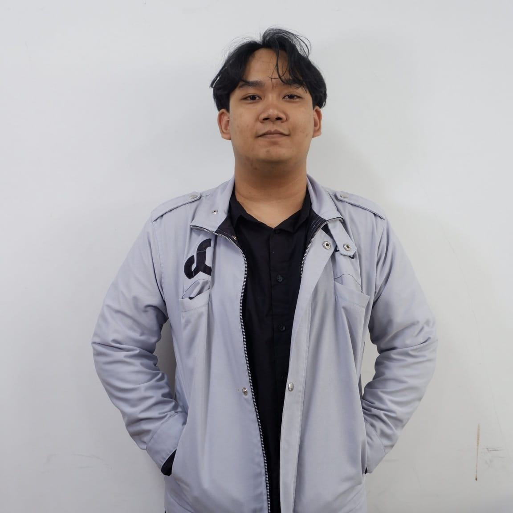

Engineering intelligent
industrial automation systems.
I'm Bustan Nabiel Maulana, a final-year Electrical Engineering student at Telkom University passionate about industrial automation, embedded systems, instrumentation, robotics, IoT, and applied AI. Experienced in hands-on industrial instrumentation at PT Semen Indonesia (SIG) and active research/laboratory coordination across campus.

Bustan Nabiel Maulana
Final-Year Electrical Engineering Student at Telkom University | Industrial Automation, Embedded IoT & AI Systems
Undergraduate Electrical Engineering student at Telkom University passionate about industrial automation, embedded systems, instrumentation, robotics, IoT, and applied AI. Experienced in hands-on industrial instrumentation at PT Semen Indonesia (SIG) and active research/laboratory coordination across campus.
Specialized Competency Matrix
Industrial Automation & Instrumentation
Hands-on experience in industrial instrumentation maintenance, load cell calibration, control valve inspection, and PLC/HMI/SCADA system interconection at PT Semen Indonesia (SIG).
Embedded Systems & IoT Engineering
Architecting end-to-end connected systems using ESP32/Raspberry Pi microcontrollers, sensor interfacing, Firebase cloud integration, and real-time monitoring dashboards.
Computer Vision & Applied AI
Implementing real-time object classification with TensorFlow Lite and OpenCV on edge devices. Applying ML algorithms like KNN for anomaly detection in power monitoring systems.
Interactive Experience Deck
Select an activity from the interactive list to inspect detailed achievements and media
Interactive Project Showcase
Select any project from the directory on the left to inspect technical blueprints and media
Professional Certificates
Curved 3D Coverflow slider — swipe or click arrows to rotate certificates

OCI 2025 AI Foundations Associate
Oracle University
Certified in cloud AI fundamentals, machine learning concepts, and Oracle Cloud Infrastructure services.

SIC Batch 7 Stage 3: AI
Samsung & Hacktiv8
AI: Crafting Thoughts for Machines — advanced artificial intelligence concepts, neural networks, and model deployment.

SIC Batch 7 Stage 2: IoT
Samsung
IoT: Device & Hardware Discovery — embedded IoT device programming, sensor integration, and hardware interfacing.

SIC Batch 7 Stage 1: Python
Samsung
Python Programming fundamentals — data structures, object-oriented programming, and algorithmic thinking.

PJ Hardware & Asprak Daskom
Dekan FTE Telkom University
Penanggung Jawab Hardware & Asisten Praktikum Dasar Komputer 2025/2026.

Koord. Maintenance & Logistics
FTE Telkom University
Koordinator Divisi Maintenance & Logistics Lab Dasar Komputer 2024/2025.

Memulai Pemrograman Dengan C
Dicoding Academy
Pointer memory management, manual heap allocation, and low-level embedded programming in C.

Python Dasar & Lanjutan
Skilvul
Object-oriented architecture, data structures, algorithm complexity, and advanced Python scripting.

Novo Club Batch 3 & Leadership
ParagonCorp
Novo Club Batch 3 & Novo Club in Action leadership bootcamp by ParagonCorp — innovation and entrepreneurship.